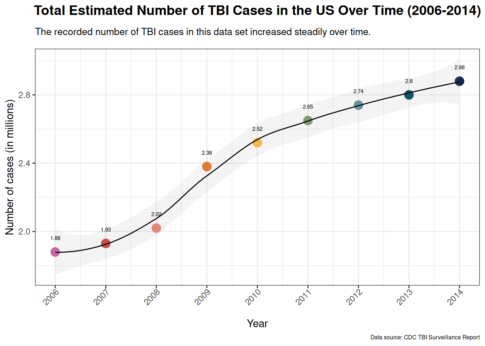
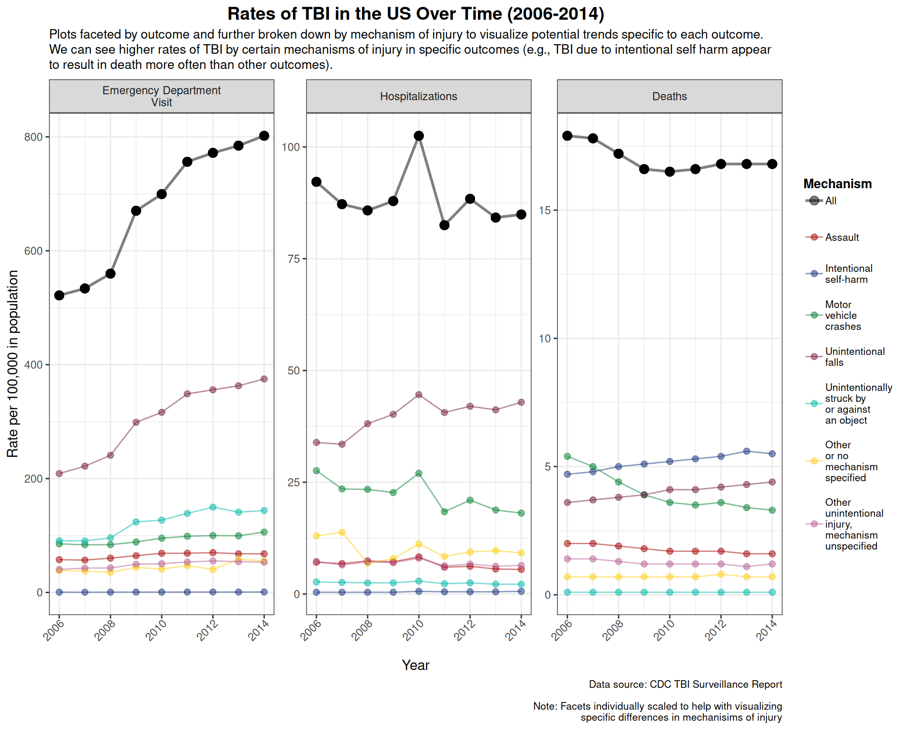
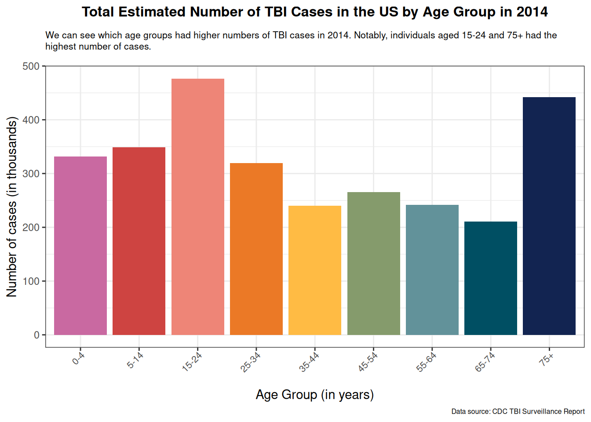
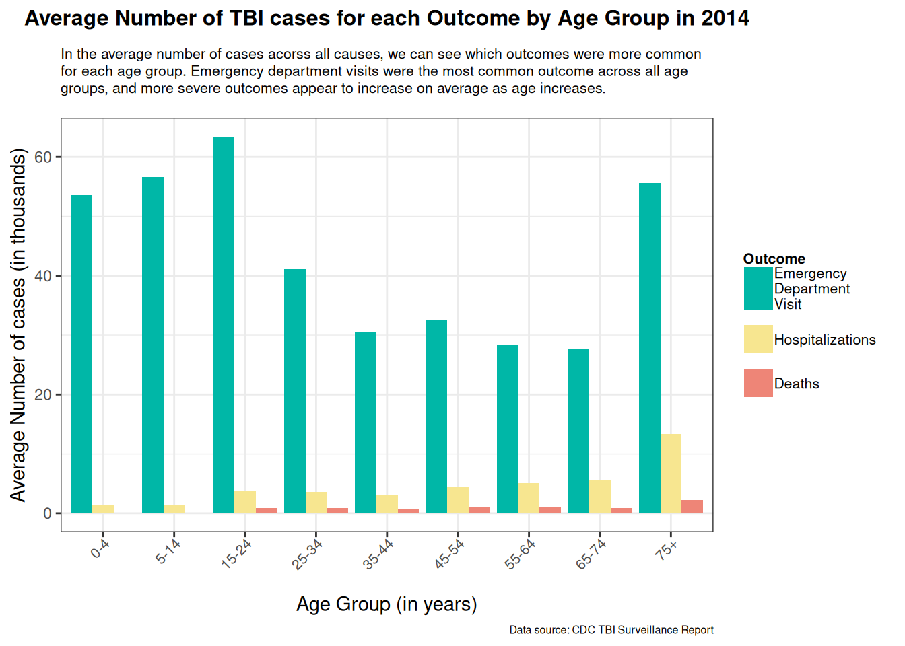
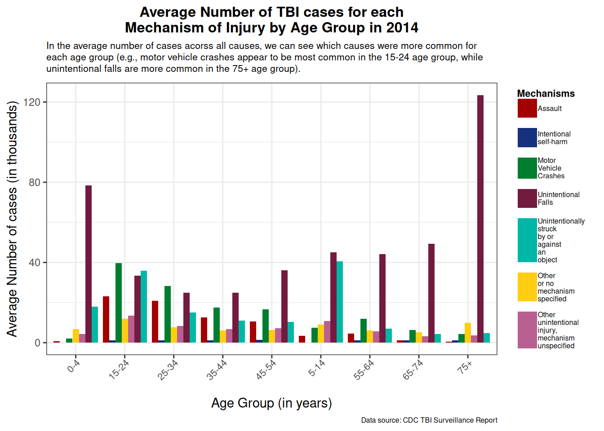
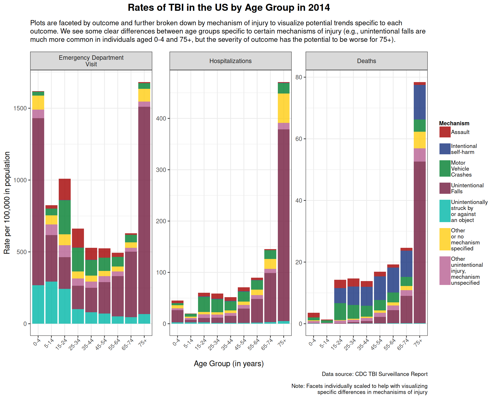

library(readr)
tbi_age <- read_csv('https://raw.githubusercontent.com/rfordatascience/tidytuesday/main/data/2020/2020-03-24/tbi_age.csv')
tbi_year <- read_csv('https://raw.githubusercontent.com/rfordatascience/tidytuesday/main/data/2020/2020-03-24/tbi_year.csv')Example Analysis
Traumatic brain injury (TBI) is the result of some type of external damage to the brain, which can vary in severity depending on the mechanism of injury and the individual (Medicine n.d.). It is a very common cause of disability and death, with millions of cases occurring each year in the U.S. alone (Disease Control and Prevention 2014). It’s important that we continue to try and understand the etiology, clinical consequences, and trends in TBI incidence to better inform prevention efforts and clinical care.
Question
The goal is to have a better understanding of traumatic brain injury (TBI) trends and how different causes lead to different outcomes in certain populations. Specifically, how has the incidence of TBI changed over time between 2006 and 2014? How do different mechanisms of injury relate to patient outcomes, and zooming in on a specific year, does this differ by age?
Audience: The general public who are interested in learning more about the relatively recent history of TBI trends and outcomes .
Data Source: This basic analysis will use data from the Traumatic Brain Injury (TBI) data set posted by the TidyTuesday project from the Data Science Learning Community (Community 2024). This was originally collected to spread awareness about the incidence and causes of brain injury in America. The specific data used in this analysis was sourced from the CDC (Disease Control and Prevention 2014).
Important
Link to GitHub Repo and data dictionary: tidytuesday. Scroll down to see the data dictionary for both data sets used in this analysis.

TBI graphic summary is from Brain Injury Association of America.
If you’re interested in both learning more about brain injury and how to get involved/raise awareness, you can check out the Brain Injury Association of America website linked in the margins.
For a general, but slightly more in depth overview of TBI, you can read through Johns Hopkins Medicine’s webpage on TBI that is geared toward their patients (Medicine n.d.). There is also this recent literature review (Obasa et al. 2024) that provides a more detailed and nuanced overview of what TBI is, its classification and clinical significance, and potential long-term outcomes.
Analysis
Reading in data:
Loading in necessary packages:
library(dplyr)
library(tidyr)
library(ggplot2)
library(ggtext)
library(stringr)
library(forcats)Incidence Over Time
Note
For the purposes of this analysis, “outcome” refers to the level of severity (i.e., how much medical attention received or mortality) following a TBI. This corresponds to “Emergency Department Visits”, “Hospitalizations”, and “Deaths” in the data set. “Mechanism of injury” and “cause” will be used interchangeably.
# Making table for total TBI cases per year
total_per_yr <- tbi_year %>%
group_by(year) %>%
summarise(total_case_count = round(sum(number_est, na.rm = TRUE)/1000000, digits = 2))
# Displaying table
knitr::kable(total_per_yr)| year | total_case_count |
|---|---|
| 2006 | 1.88 |
| 2007 | 1.93 |
| 2008 | 2.02 |
| 2009 | 2.38 |
| 2010 | 2.52 |
| 2011 | 2.65 |
| 2012 | 2.74 |
| 2013 | 2.80 |
| 2014 | 2.88 |
# Plot table to better visualize overall case counts per year
ggplot(total_per_yr, aes(x = year, y = total_case_count, fill = factor(year))) +
geom_point(aes(x = year, y = total_case_count, color = factor(year)), stat = "identity", size = 4) +
geom_smooth(aes(x = year, y = total_case_count, group = 1), method = "loess", size = 0.5, color = "black", alpha = 0.1) +
scale_x_continuous(breaks = unique(total_per_yr$year), labels = unique(total_per_yr$year)) +
scale_color_manual(values = c("#C969A1FF", "#CE4441FF", "#EE8577FF", "#EB7926FF", "#FFBB44FF", "#859B6CFF", "#62929AFF", "#004F63FF", "#122451FF")) +
geom_text(aes(label = total_per_yr$total_case_count), vjust = -3, size = 2) +
labs(title = "Total Estimated Number of TBI Cases in the US Over Time (2006-2014)",
subtitle = "The recorded number of TBI cases in this data set increased steadily over time.",
x = "Year",
y = "Number of cases (in millions)",
caption = "Data source: CDC TBI Surveillance Report") +
theme_bw() +
theme(plot.title = element_text(size = 14, face = "bold", color = "black",
hjust = 0.5, margin = margin(b = 10)),
axis.text.x = element_text(angle = 45, hjust = 1, margin = margin(b = 10)),
plot.subtitle = element_textbox_simple(size = 10, margin = margin(b = 12, unit = "pt")),
plot.caption = element_text(size = 6),
legend.position = "none")
# Wrangling data into rate tibbles
all_rate_tbi <- tbi_year %>%
filter(injury_mechanism == "Total") %>%
group_by(year, type) %>%
summarise(total_rate = rate_est)
mech_rate_tbi <- tbi_year %>%
filter(injury_mechanism != "Total") %>%
group_by(year, injury_mechanism, type) %>%
summarise(mech_rate = rate_est)
# Joining the two tibbles together
tbi_rates <- left_join(mech_rate_tbi, all_rate_tbi, by = c("year", "type"))
# Plot rates by outcome and mechanism (scaled, more detailed view)
ggplot(tbi_rates) +
geom_point(aes(x = year, y = total_rate, color = "All"), size = 3, alpha = 0.5) +
geom_line(aes(x = year, y = total_rate, color = "All"), size = 1, alpha = 0.5) +
geom_point(aes(x = year, y = mech_rate, color = injury_mechanism), size = 2, alpha = 0.5) +
geom_line(aes(x = year, y = mech_rate, color = injury_mechanism), size = 0.5, alpha = 0.5) +
facet_wrap(~factor(type, levels = c("Emergency Department Visit", "Hospitalizations", "Deaths")),
labeller = label_wrap_gen(width = 25),
scales = "free_y") +
labs(title = "Rates of TBI in the US Over Time (2006-2014)",
subtitle = "Plots faceted by outcome and further broken down by mechanism of injury to visualize potential trends specific to each outcome. We can see higher rates of TBI by certain mechanisms of injury in specific outcomes (e.g., TBI due to intentional self harm appear to result in death more often than other outcomes).",
x = "Year",
y = "Rate per 100,000 in population",
caption = "Data source: CDC TBI Surveillance Report\n\nNote: Facets individually scaled to help with visualizing\nspecific differences in mechanisims of injury",
color = "Mechanism") +
theme_bw() +
theme(plot.title = element_text(size = 14, face = "bold", color = "black",
hjust = 0.5, margin = margin(b = 10)),
axis.text.x = element_text(angle = 45, hjust = 1, margin = margin(b = 10)),
plot.subtitle = element_textbox_simple(size = 10, hjust = 0.5, margin = margin(b = 12, unit = "pt")),
plot.caption = element_text(size = 8),
legend.position = "right",
legend.title = element_text(size = 10, face = "bold", margin = margin(r = 5)),
legend.text = element_text(size = 8, margin = margin(r = 5)),
legend.key.spacing.y = unit(0.8, "lines")) +
scale_color_manual(labels = function(x) str_wrap(x, width = 10),
values = c("All" = "black",
"Assault" = "#A40000FF",
"Intentional self-harm" = "#16317DFF",
"Motor vehicle crashes" = "#007E2FFF",
"Other or no mechanism specified" = "#FFCD12FF",
"Other unintentional injury, mechanism unspecified" = "#B86092FF",
"Unintentional falls" = "#721B3EFF",
"Unintentionally struck by or against an object" = "#00B7A7FF"),
limits = c("All",
"Assault",
"Intentional self-harm",
"Motor vehicle crashes",
"Unintentional falls",
"Unintentionally struck by or against an object",
"Other or no mechanism specified",
"Other unintentional injury, mechanism unspecified"))
TBI by Age
We will specifically look at the most recent year of data available, 2014, which also has the highest incidence of TBI cases according to the previous analysis.
# Wrangling age df for total cases by age group
total_count_age <- tbi_age %>%
filter((age_group != "Total") & (age_group != "0-17")) %>%
count(age_group, wt = number_est, name = "total_case_count") %>%
group_by(age_group) %>%
summarise(total_case_count = total_case_count/1000) %>%
ungroup()
# Re-level factors in case not ordered from youngest to oldest
total_count_age$age_group <- fct_relevel(total_count_age$age_group,
c("0-4", "5-14", "15-24", "25-34", "35-44",
"45-54", "55-64", "65-74", "75+"))
# Bar chart for total case numbers
ggplot(total_count_age) +
geom_bar(aes(x = age_group, y = total_case_count, fill = age_group),
stat = "identity", position = "dodge") +
scale_fill_manual(values = c("#C969A1FF", "#CE4441FF", "#EE8577FF", "#EB7926FF", "#FFBB44FF", "#859B6CFF", "#62929AFF", "#004F63FF", "#122451FF")) +
labs(title = "Total Estimated Number of TBI Cases in the US by Age Group in 2014",
subtitle = "We can see which age groups had higher numbers of TBI cases in 2014. Notably, individuals aged 15-24 and 75+ had the highest number of cases.",
x = "Age Group (in years)",
y = "Number of cases (in thousands)",
caption = "Data source: CDC TBI Surveillance Report") +
theme_bw() +
theme(plot.title = element_text(size = 12, face = "bold", color = "black",
hjust = 0.5, margin = margin(b = 10)),
axis.text.x = element_text(size = 8, angle = 45, hjust = 1, margin = margin(b = 10)),
plot.subtitle = element_textbox_simple(size = 8, hjust = 0.5, margin = margin(b = 12, unit = "pt")),
plot.caption = element_text(size = 6),
legend.position = "none")
# Mean case numbers by outcome for each age group --> see overall what outcomes are most common for each age
means <- tbi_age %>%
filter((age_group != "Total") & (age_group != "0-17")) %>%
group_by(age_group, type) %>%
summarise(mean_cases = (mean(number_est, na.rm = TRUE)/1000))
# Re-level factors that are out of order
means$type <- fct_relevel(means$type, c("Emergency Department Visit", "Hospitalizations", "Deaths"))
means$age_group <- fct_relevel(means$age_group, c("0-4", "5-14", "15-24", "25-34", "35-44",
"45-54", "55-64", "65-74", "75+"))
# Bar chart for mean case numbers by outcome for each age group
ggplot(means, aes(x = age_group, y = mean_cases)) +
geom_bar(aes(fill = type), stat = "identity", position = "dodge") +
labs(title = "Average Number of TBI cases for each Outcome by Age Group in 2014",
subtitle = "In the average number of cases acorss all causes, we can see which outcomes were more common for each age group. Emergency department visits were the most common outcome across all age groups, and more severe outcomes appear to increase on average as age increases.",
x = "Age Group (in years)",
y = "Average Number of cases (in thousands)",
caption = "Data source: CDC TBI Surveillance Report",
fill = "Outcome") +
theme_bw() +
theme(plot.title = element_text(size = 12, face = "bold", color = "black",
hjust = 0.5, margin = margin(b = 10)),
axis.text.x = element_text(size = 8, angle = 45, hjust = 1, margin = margin(b = 10)),
plot.subtitle = element_textbox_simple(size = 8, hjust = 0.5, margin = margin(b = 12, unit = "pt")),
plot.caption = element_text(size = 6),
legend.title = element_text(size = 8, face = "bold", margin = margin(r = 5)),
legend.text = element_text(size = 8, margin = margin(r = 5)),
legend.key.spacing.y = unit(0.5, "lines")) +
scale_fill_manual(labels = function(x) str_wrap(x, width = 8),
values = c("Emergency Department Visit" = "#00B7A7FF",
"Hospitalizations" = "#F7E690FF",
"Deaths" = "#EE8577FF"),,
limits = c("Emergency Department Visit",
"Hospitalizations",
"Deaths"))
# Mean case numbers by outcome for each age group --> see overall what outcomes are most common for each age
means_mech <- tbi_age %>%
filter((age_group != "Total") & (age_group != "0-17")) %>%
group_by(age_group, injury_mechanism) %>%
summarise(mean_cases = (mean(number_est, na.rm = TRUE)/1000))
# Re-level factors that are out of order
means$age_group <- fct_relevel(means$age_group, c("0-4", "5-14", "15-24", "25-34", "35-44",
"45-54", "55-64", "65-74", "75+"))
# Bar chart for mean case numbers by outcome for each age group
ggplot(means_mech, aes(x = age_group, y = mean_cases)) +
geom_bar(aes(fill = injury_mechanism), stat = "identity", position = "dodge") +
labs(title = "Average Number of TBI cases for each\nMechanism of Injury by Age Group in 2014",
subtitle = "In the average number of cases acorss all causes, we can see which causes were more common for each age group (e.g., motor vehicle crashes appear to be most common in the 15-24 age group, while unintentional falls are more common in the 75+ age group).",
x = "Age Group (in years)",
y = "Average Number of cases (in thousands)",
caption = "Data source: CDC TBI Surveillance Report",
fill = "Mechanisms") +
theme_bw() +
theme(plot.title = element_text(size = 12, face = "bold", color = "black",
hjust = 0.5, margin = margin(b = 10)),
axis.text.x = element_text(size = 8, angle = 45, hjust = 1, margin = margin(b = 10)),
plot.subtitle = element_textbox_simple(size = 8, hjust = 0.5, margin = margin(b = 12, unit = "pt")),
plot.caption = element_text(size = 6),
legend.title = element_text(size = 8, face = "bold", margin = margin(r = 5)),
legend.text = element_text(size = 6, margin = margin(r = 5)),
legend.key.spacing.y = unit(0.5, "lines")) +
scale_fill_manual(labels = function(x) str_wrap(x, width = 5),
values = c("Assault" = "#A40000FF",
"Intentional self-harm" = "#16317DFF",
"Motor Vehicle Crashes" = "#007E2FFF",
"Other or no mechanism specified" = "#FFCD12FF",
"Other unintentional injury, mechanism unspecified" = "#B86092FF",
"Unintentional Falls" = "#721B3EFF",
"Unintentionally struck by or against an object" = "#00B7A7FF"),
limits = c("Assault",
"Intentional self-harm",
"Motor Vehicle Crashes",
"Unintentional Falls",
"Unintentionally struck by or against an object",
"Other or no mechanism specified",
"Other unintentional injury, mechanism unspecified"))
# Wrangling age df
mech_age_tbi <- tbi_age %>%
filter(injury_mechanism != "Total") %>%
filter((age_group != "Total") & (age_group != "0-17")) %>%
group_by(age_group, injury_mechanism, type) %>%
summarise(mech_age_rate = rate_est)
# Re-level factors in case not ordered from youngest to oldest
mech_age_tbi$age_group <- fct_relevel(mech_age_tbi$age_group,
c("0-4", "5-14", "15-24", "25-34", "35-44",
"45-54", "55-64", "65-74", "75+"))
# Stacked bar chart
ggplot(mech_age_tbi) +
geom_bar(aes(x = age_group, y = mech_age_rate, fill = injury_mechanism),
stat = "identity", position = "stack", alpha = 0.8) +
facet_wrap(~factor(type, levels = c("Emergency Department Visit", "Hospitalizations", "Deaths")),
labeller = label_wrap_gen(width = 25),
scales = "free_y") +
labs(title = "Rates of TBI in the US by Age Group in 2014",
subtitle = "Plots are faceted by outcome and further broken down by mechanism of injury to visualize potential trends specific to each outcome. We see some clear differences between age groups specific to certain mechanisms of injury (e.g., unintentional falls are much more common in individuals aged 0-4 and 75+, but the severity of outcome has the potential to be worse for 75+).",
x = "Age Group (in years)",
y = "Rate per 100,000 in population",
caption = "Data source: CDC TBI Surveillance Report\n\nNote: Facets individually scaled to help with visualizing\nspecific differences in mechanisims of injury",
fill = "Mechanism") +
theme_bw() +
theme(plot.title = element_text(size = 14, face = "bold", color = "black",
hjust = 0.5, margin = margin(b = 10)),
axis.text.x = element_text(size = 8, angle = 45, hjust = 1, margin = margin(b = 10)),
plot.subtitle = element_textbox_simple(size = 10, hjust = 0.5, margin = margin(b = 12, unit = "pt")),
plot.caption = element_text(size = 8),
legend.position = "right",
legend.title = element_text(size = 8, face = "bold", margin = margin(r = 5)),
legend.text = element_text(size = 8, margin = margin(r = 5)),
legend.key.spacing.y = unit(0.5, "lines")) +
scale_fill_manual(labels = function(x) str_wrap(x, width = 10),
values = c("Assault" = "#A40000FF",
"Intentional self-harm" = "#16317DFF",
"Motor Vehicle Crashes" = "#007E2FFF",
"Other or no mechanism specified" = "#FFCD12FF",
"Other unintentional injury, mechanism unspecified" = "#B86092FF",
"Unintentional Falls" = "#721B3EFF",
"Unintentionally struck by or against an object" = "#00B7A7FF"),
limits = c("Assault",
"Intentional self-harm",
"Motor Vehicle Crashes",
"Unintentional Falls",
"Unintentionally struck by or against an object",
"Other or no mechanism specified",
"Other unintentional injury, mechanism unspecified"))
Summary of Results
From the above analysis, we can see that the total number of TBI cases increased between the years 2006 and 2014. When looking at rates of TBI over time, we can see that ED visits account for the majority of TBI cases and seems to be driving the increase of overall cases over the years. Hospitalizations and deaths are less common outcomes, and both remain relatively steady over time. Different mechanisms of injury also appear to be “drivers” for different outcomes. For example, TBI due to intentional self-harm has the highest rate over the years for the outcome of death, and unintentional falls account for a large proportion of the rate of TBI-related ED visits and hospitalizations.
When zooming in on the year 2014 and looking at TBI cases by age group, we can see that individuals aged 15-24 and 75+ had the highest number of cases. One explanation for this could be that 15-24 is the age range with more risk-taking behavior, and 75+ is when individuals tend to be more physically vulnerable and more prone to falls (based on average number of TBI cases caused by motor vehicle crashes and unintentional falls in the respective age groups). More severe outcomes appear to more likely in older age groups relative to younger ones. Additionally, certain mechanisms of injury appear to be more common in specific age groups; for instance, unintentional falls are much more common in individuals aged 0-4 and 75+, though result in more severe outcomes in the 75+ group.
Note
The differences in TBI incidence and outcomes across age groups and mechanisms of injury can serve to highlight health disparities that need to be addressed, especially with the potential rise in TBI cases over time. For more information on these disparities, you can go to the CDC’s webpage on TBI and health disparities (Disease Control and Prevention 2025).
Important
Data analysis is limited by available information in the data set. Averages could only be taken from total case counts. Rates could not be averaged due to lack of information to take weighted averages. Additionally, age analysis could only be done on the year 2014. For more information on data limitations, you can look at the original surveillance report by the CDC (Disease Control and Prevention 2014).
Functions Used
- dplyr:
filter(),group_by(),summarise(),left_join(),count(),ungroup() - ggplot2:
geom_point(),geom_line(),geom_bar(),scale_color_manual(),facet_wrap(),labs(),theme_bw(),theme(),scale_x_continuous(),geom_text()
Other packages
- ggtext:
element_text(),element_textbox_simple() - stringr:
str_wrap() - forcats:
fct_relevel()
References
Community, Data Science Learning. 2024. “Tidy Tuesday: A Weekly Social Data Project.” https://tidytues.day.
Disease Control, Centers for, and Prevention. 2014. “Surveillance Report of Traumatic Brain Injury-Related Emergency Department Visits, Hospitalizations, and Deaths.” https://www.cdc.gov/traumaticbraininjury/pdf/TBI-Surveillance-Report-FINAL_508.pdf.
———. 2025. “Traumatic Brain Injury & Concussion: Health Disparities in TBI.” https://www.cdc.gov/traumatic-brain-injury/health-equity/index.html.
Medicine, Johns Hopkins. n.d. “Traumatic Brain Injury.” https://www.hopkinsmedicine.org/health/conditions-and-diseases/traumatic-brain-injury.
Obasa, Adedunsola Adewunmi, Funmilayo Eniola Olopade, Sharon Leah Juliano, and James Olukayode Olopade. 2024. “Traumatic Brain Injury or Traumatic Brain Disease: A Scientific Commentary.” Brain Multiphysics 6: 100092. https://doi.org/https://doi.org/10.1016/j.brain.2024.100092.